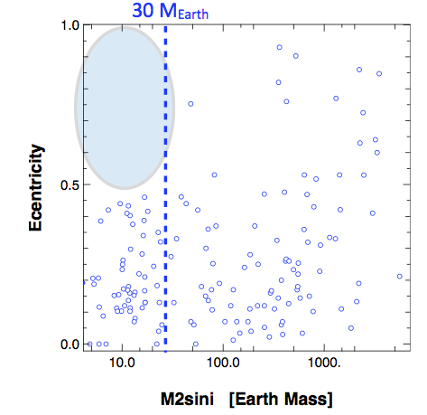
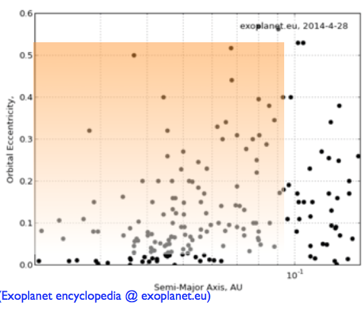
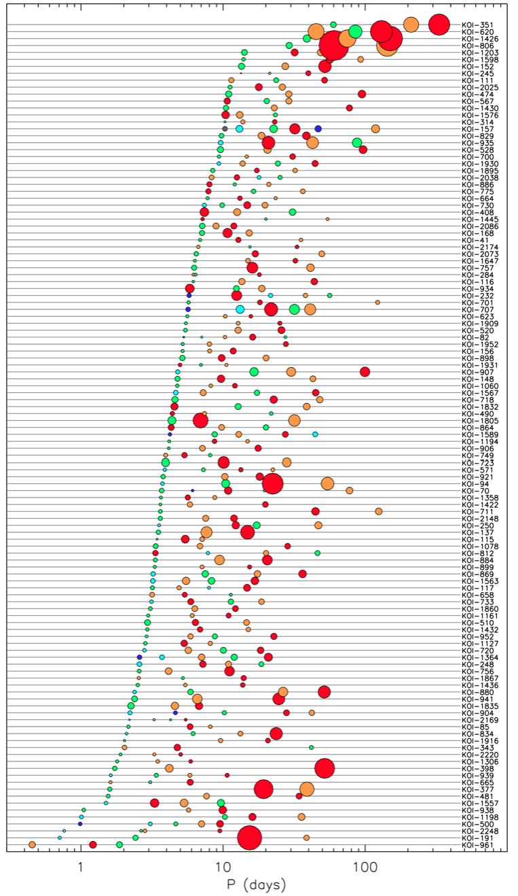

系外行星统计结果¶
通过对系外行星的探测，我们获得了大量的数据，并得出了一些统计结果。通过这些数据分析，我们能修正行星演化的模型并做出预测。
一个谜团
第一颗确认的系外行星 51 Peg b 是一颗“热木星”——质量巨大，然而这颗行星距离其恒星却非常近——甚至要比太阳系内任意一颗行星到太阳的距离。可是问题在于，距离恒星这么近的地方，并没有足够的质量来形成一颗这么巨大的行星。
谜题的答案是，这颗行星实际上是在距离恒星更远的地方形成的，但是在形成的过程中以及形成之后，这颗行星在周围物质的作用下，逐渐损失能量，轨道原来越小。
然而这给我们带来另一个问题，为什么这颗行星没有因为损失太多的动能和势能，从而掉进恒星中去呢？
另外，我们对于地外生命的好奇心，也驱使着我们去寻找宜居带中的类地行星。
行星质量-距离-半径¶
早期统计结果¶
自1995年第一颗系外行星 51 Peg b 被发现一直到2004年，天文学家一共发现了大约130颗系外行星，并根据这些数据得出了一些初步的结论：
- 1%的太阳型恒星有“热木星”。
- 至少7%的太阳型行星拥有至少一颗行星。
- 已发现的行星(大多是气态巨行星)出现在富金属恒星附近的概率更高。
- 行星轨道、行星系统多种多样。 这是最令人惊讶的一个结果：行星不但普遍，而且多种多样。
Advanced
现已发现的系外行星根据其半径、组成和轨道半径大体可以分为以下五类：[1]
- 热木星(Hot Jupiter):质量接近或超过木星,行星轨道与母恒星距离在0.5至0.015天文单位以内。
- 气态巨行星(Gas gaint):与木星、土星类似的行星。
- 冰巨星(Ice gaint):与天王星、海王星类似的行星。
- 超级地球(Super-Earth):质量约为地球的2.5到10倍的岩质行星。
- 迷你海王星(Mini-Neptune):质量低于天王星和海王星，但组成却和海王星相当类似。
早期发现的系外行星，质量分布在0.2木星质量~20木星质量之间，轨道周期大于2.5天，轨道偏心率分布在0~0.93之间。
系外行星系统的多样性¶
对于同一系外行星系统，其内部行星的轨道有可能有很大差异。根据径向速度测量法的相关知识，我们可以根据径向速度测量曲线大致判断行星轨道的偏心率。

上图所示的径向速度曲线与正弦曲线相似，因此该行星的偏心率很小，近似于圆轨道。

上图所示的阶跃型曲线表示该行星轨道的偏心率相当大。
如果行星系内的两颗行星的轨道周期相差很大，就会形成分层系统(Heirarchized System)，其径向速度曲线可以看做是两个频率相差很大的波形的叠加。 如果行星系内的两颗行星的轨道周期成整数倍，就会形成共振系统(Resonant System)，其径向速度曲线变化很快，要分辨出这是两颗行星比较困难，需要花更长的时间。
Note
分层系统（Heirarchized System）中，两颗行星的周期没有确定的关系，两颗行星的周期是任意的。而共振系统（Resonant System）的意思是说，行星的轨道周期之间有确定的关系，例如两颗行星轨道周期之比是 2 等等。
如果行星系的中心天体是两颗互相旋转的双星，那么情况又有所不同。由于双星的运动对行星轨道的影响，在双星的一定范围内无法形成稳定的行星轨道，只有在范围以外，行星轨道才可以稳定。

不同种类的系外行星系统展示在下图中：


行星的分布、质量及距离¶
在系外行星探测中，径向速度法和凌日法是最主要的两种方法，这两种方法各有局限性：
径向速度法 通过测量恒星光谱微小的变化来探测行星，这种方法能够准确测量行星的周期和质量，但却无法测量行星的半径。 凌日法 通过测量恒星亮度的微小变化来探测行星，这种方法能够准确测量行星的周期和半径，但却无法测量行星的质量。
我们可以通过比较HARPS和Kepler年具体看看两种方法各自的适用范围：
- HARPS(径向速度法)对于周期小于50天的行星，最小能测出 \(m_p \sin i \approx 3M_{\oplus}\) 的无偏分布。
- Kepler(凌日法)对于周期小于50-100天的行星，最小能测出 \(R_p \approx 1R_{\oplus}\) 的无偏分布。
由于两种方法各自的局限性，它们并不能得出完整的行星分布，因此需要对结果进行修正。
径向速度法主要分布中对质量较小、周期较长的部分进行修正。
凌日法主要对分布中半径较小，周期较长的部分进行修正。
在修正之后，得到了无偏的行星质量、半径分布，如下图所示：
另外，通过比较母恒星Fe/H的比值与行星数量的关系，我们可以得出母恒星的金属性与行星的关系：
综合分析HARPS与Kepler数据，我们可以得出以下结论：
- 1%的恒星拥有热木星，其存在于富金属恒星周围的概率更大。
- 10%的恒星拥有气态巨行星，其存在于富金属恒星周围的概率更大。
- 较小的恒星几乎没有气态巨行星。
- 50%-80%的恒星拥有至少一颗行星。
- 30%的恒星拥有一颗 \(m_p < 30M_{Earth}\) ，周期100天以内的行星。
- 大多数较小较轻的行星存在于多行星系统中。
- 存在一颗 \(m_p \sin i < 30M_{Earth}\) 行星的行星系中，超过70%还存在其他行星。
- 行星系所能允许的致密程度能使其“刚好”稳定。
行星质量与半径的关系¶
由于径向速度法、凌日法所测行星数据的重点并不相同，两者之间具有很好的互补性，如将数据结合的话，可以得到行星质量与半径的关系，这对于研究行星的内部结构十分重要。即使两个天体大小相同，如果其质量差异较大，其内部结构也将存在很大差异。例如气态巨行星(如木星)和红矮星(如OGLE-TR-122b)具有相同的半径，但由于木星质量没有OGLE-TR-122b大，其内部无法发生核反应，因此前者属于行星，后者属于恒星。

可见，了解行星质量与半径的关系对于行星分类具有重要作用，进而还可了解的行星的形成过程。 最新的系外行星质量-半径关系如下图：

观测与理论¶
通过观测，我们能够验证观测数据与理论是否符合，并能对理论进行修缮。而有了更好的理论，就能为未来的观测提供更好的方向。 下图展示了一个行星演化模型中，行星轨道半长轴、行星质量随时间变化的规律：
而对系外行星的实际观测的结果如下：
更多的观测与理论符合的情况可以见上述论文与课程视频，在此不一一赘述。 未来我们对于系外行星的观测方向主要将集中于：
获取更大量的数据。
更多探测方法的优势互补。
特定行星系统的具体分析，包括：
-行星轨道参数
-行星内部结构
-行星大气层
与理论相符
行星的轨道特征和星系的结构¶
恒星质量¶
一个直观的想法是，形成恒星系的原行星盘（Protoplanetary Disk）越大，形成的恒星的质量越大。同时因为更多的尘埃物质会使得行星的形成更快，而且最终的行星也更大。所以，按照这个想法，围绕大恒星转的行星的质量也会普遍大么？
RV 方法给出了一些数据表明[2]_ ，M Dwarfs 周围的大行星很少，相反，超级地球（Super-Earth）和迷你海王星（Mini-Neptune）出现的频率非常大。而开普勒的结果也表明[3]_ ，在 M Dwarf 周围几乎没有巨行星。
Note
我们可以把观测结果绘制成频率图，这样就可以发现不同的质量区间的行星出现的频率。
那么在质量更大的恒星周围的行星的情况呢？
从这个分布图中我们可以看到，我们确实发现了很多围绕大质量恒星转动的行星。(Exoplanet encyclopedia @ exoplanet.eu)
目前的数据来看，更大的恒星周围确实会有更大的行星。
然后，特别需要注意的是，因为探测大质量恒星周围的小质量行星很困难，所以现在的数据其实是带偏离的数据。所以我们不能直接来拿不同质量行星的出现的频率来跟之前比较。
一个比较好的方法是[4]_，统计行星总质量。例如我们可以将恒星质量分为三个区间，然后将每个区间内的所有的行星的质量求和，然后做归一化。
显然，恒星的质量越大，周围的行星的总质量也越大。
轨道偏心率¶
太阳系中的行星的轨道大多接近圆形（偏心率 \(e<0.28\)），而且想象来说，从原行星盘形成的行星，应该也大多是圆形。然而实际的数据表明，很多的系外行星的轨道并不是圆形的。
RV 方法看偏心率
牛顿力学的知识（或者开普勒定律）告诉我们，行星在近日点的时候，速率是最快的，远日点的时候，速率是最慢的。所以我们可以从径向速度曲线上面找出哪些是近日点，即速率最大的点。定性的来看，偏心率越大，在近日点附近的时间越小，近日点和远日点的速率差别也越大。
我们现在发现的行星中，有的偏心率非常大。
Note
实际上行星形成之后会有很多对轨道的扰动，所以，不是所有的行星轨道都接近圆形也并非不可理解的事情。一些可能的解释是：
- 行星和行星之间的相互作用；
- 行星和原行星盘之间的相互作用；
- 多行星迁移；
- 恒星或者行星的伴星（Kozai 效应），上图中用圆圈标注的大偏心率的行星就是在一个双星系统中；
- 其他。
另外一个很奇怪的现象是，如果我们把行星和偏心率和质量绘制出来，如下图
我们发现左上角，也就是小质量（\(<30M_{\text{Earth}}\)）大偏心率的区域，是空缺的。
一个可能的理解是，小质量的行星大多是在多行星系统中的，因此如果某颗行星的偏心率太大，整个系统就会不稳定。作为一种验证，我们看一下多行星系统中的偏心率的情况。
可以看到在多行星系统中，没有大偏心率的行星，作为对照，虚线部分，即单行星系统，却有很多大偏心率的系统。
另一个研究可以让我们看的更清楚。下 图绘制了轨道偏心率和系统中行星个数的关系，[5]
非常清楚的看到，系统中行星的个数越多，最大的偏心率就越小。换句话说，系统中的行星数量越少，偏心率的多样性就越好。
除了这种稳定性的解释，另外一种解释是，因为小质量的行星多在多行星系统中形成，而小质量行星受到原行星盘的影响（dissipation，viscosity等）更大，更加趋向于形成接近圆形的轨道。
多行星系统的动力学——牛顿模型¶
这种方法将恒星和行星都看多质点模型。
作为一阶近似，我们可以忽略行星和行星之间的相互作用。然而实际上，当出现第二颗行星的时候，除了行星和行星之间的相互作用，系统会出现一些额外的问题，例如系统的稳定性，对开普勒定律的偏离等等。
为了描述多行星系统，我们有两种方法，一种是使用数值计算，另一种是简化模型进行解析计算（远在计算机发明之前，天体力学就已经很完善了）。
Monash University 的 R. Marding 进行了一些模拟，可以发现在某些情况下，轨道的偏心率太大，会导致系统不稳定。
当然我们也可以利用这种稳定性来寻找系统中额外的行星。例如我们发现了一颗行星，但是模拟发现系统不稳定，那么我们需要另外一颗尚未发现的行星来使得系统稳定。
引潮力¶
阴影部分的行星距离恒星太近，引潮力的作用变得很重要。并且广义相对论效应也会变得显著。
HD10180 系统中发现了 7 颗行星。使用牛顿模型，这个系统是不稳定的。但是如果考虑到引潮力和相对论效应，这就是个稳定的系统了。
假定一个系统开始时具有偏心率很大的行星，但是由于引潮力，行星的能量会被潮汐消耗掉，从而轨道会变得更加接近圆形（圆轨道能量更低）。详细的说，因为行星的近日点会受到更大的引潮力，能量耗散也更多，所以这类似于在近日点的与动量相反的冲量，从而将行星从椭圆轨道带到更接近圆形的轨道。另外，岩石行星要比气体行星对能量的耗散要快，因为岩石的恢复力（张力）更大，引潮力使得行星变形，但是岩石行星可以更快的恢复到原来的形状（将能量好散掉）。
引潮力还有另外一个效应，就是会导致行星公转周期和自转周期的锁定。通常行星的公转周期要比自转周期要大，行星公转过程中，引潮力会消耗自转的能量，从而是的自转速度变慢，直到行星的自转周期接近公转周期，这时候引潮力就对自转能量的消耗就越来越少，从而定格在公转周期和自转周期相等的情况。引潮力导致的自转公转相互作用也会使得自转角动量的方向和公转角动量的方向趋向于在一条直线上。
然而，从下图我们发现，有些行星距离恒星足够近，引潮力的效应足够明显，能够使得行星的偏心率很快的降下来。但是观测却发现有些这样的行星有着很大的偏心率。
这种现象怎么解释呢？这样很可能是因为另一颗行星的存在，其扰动使得发现的这颗行星有很大的偏心率。
多行星系统的特性¶
之前的数值和解析的方法，我们讨论的最多两颗行星的系统，因为当行星的数量增多的时候，系统变得非常复杂。所以从观测数据上来总结一下多行星系统的特性，除了在一定程度上验证我们之前的理论模型，也有助于我们对多行星系统物理的理解。

多行星系统多样性：行星的数量，行星的轨道半径，行星的质量，一个星系内行星的类型，等等。
对照一下多行星系统和只有一颗行星的系统，

径向速度法的数据
多行星系统中的小半径轨道的比例要少得多，因为如果有个行星非常接近恒星，会对其他的行星的轨道造成显著的影响，甚至很多情况会造成不稳定，将外面的行星迁移出星系。所以轨道小的行星趋向于单独存在。然而这是一个尚无定论的问题。
另外，上图也显示出小质量的行星多在多行星系统出现，而单一行星系统中，大质量行星的比例要高的多。
开普勒的探测结果为我们提供了更多的多行星系统。Dan Fabrycky 制作了一张基于开普勒的观测结果的多行星系统图，图中清楚的显示了前面提到的多样性。
